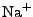
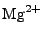

Meadionize is an improved version of the
Autoionize
plugin for VMD. Autoionize randomly places sodium and chlorine counterions
around a solvated molecule. Autoionize has been designed for molecules with
small net charges, where the electrostatic interactions between the molecule
and the counterions are relatively weak, and the molecular structure and
function are not sensitive to the counterion distribution. That is not the case
for highly charged systems, most notably nucleic acids, which are surrounded by
a clowd of counterions; correct simulations of these systems require placing
ions according to the electrostatic potential of the molecule. Meadionize
addresses this problem by placing the ions into the minima of the electrostatic
potential map generated by the
'potential' utility of the MEAD program package by \Donald Bashford by solving the Poisson-Boltzmann equation. Meadionize
accepts all MEAD configuration parameters, generates all necessary input files
for the potential program, executes it, and uses its output to place the
counterions.
New: Meadionize
version 1.2 can now add divalent ions.
Create a directory for Meadionize: e.g., under your home directory
mkdir $HOME/meadionize
Download
and save files meadionize.tcl (the main script), ions.top (the ion
topology), and pkgIndex.tcl (the package index that tells VMD
where to look for the package) into that directory. Add the following two lines
to your $HOME/.vmdrc file (create one if you do not have it):
global env
lappend auto_path $env(HOME)/meadionize
Then,
download and install the MEAD program package following
the included installation instructions. [UPDATE: MEAD is no longer available from Donald Bashford's page at St. Jude Hospital; instead, please download a copy of the source code from GitHub.
Like all other VMD plugins, you first need to load Meadionize into VMD. Type
the following command in the VMD console (better yet,
Tk console):
package require meadionize
This
command actually loads Meadionize into VMD and displays the installed plugin
version. Run 'meadionize' with no
parameters to get brief help on Meadionize syntax. Meadionize requires the
following mandatory parameters: the PSF (structure) file name, the PDB
(coordinate) file name, the Charmm parameter file name, positive and negative
ion types (as of this point,  , , ,  , and ions are supported), and either ionic strength, or explicit
numbers of the positive and negative ions to add. Other parameters are
optional; their default values rarely need to be changed, except the fg option
(fine grid resolution), which may need to be increased to A when running Meadionize on machines with low
RAM and/or adding ions to an exceptionally large system. This is an example of
Meadionize command line:
meadionize -psf solvated.psf -pdb solvated.pdb -par
par_all27_prot_lipid.prm -ipos na -ineg cl -is 0.1
Since
calculating the electrostatic potential map for large molecules can take hours,
it is recommended to run Meadionize using VMD in the text-only mode. To do
that, one needs to copy the above two command lines into a file (e.g.,
do_ionize.tcl), add a command 'quit'
to the end of the file to tell VMD to stop after executing Meadionize, and run
the following command in the UNIX shell (csh or tcsh):
vmd -dispdev text < do_ionize.tcl >&
do_ionize.log &
For
bash or ksh, the shell command syntax is slightly different:
vmd -dispdev text < do_ionize.tcl >
do_ionize.log 2>&1 &
To
monitor Meadionize in real time, use the following command (any shell):
tail -f do_ionize.log
Meadionize prints out diagnostic messages about performed steps as well as
repeats messages from the potential utility. Often, these messages include the
following warnings:
WARNING:
SAVanal_calc: vertex found with count = 2
WARNING:
SAVanal_calc: vertex found with count = 2
WARNING:
SAVanal_calc: vertex found with count = 1
These
warnings are harmless, and arise from numerical degeneracies in the calculation
of the molecular surface (see You and Bashford, J. Comp. Chem.
16, 743 (1995)). Don Bashford explains these warnings in more details in
his post on the Computational
Chemistry List.
Meadionize performs the following basic steps:
- 1. If an ionic strength is requested, Meadionize finds the number of
water molecules and calculates the numbers of the positive and negative ions
(alternatively, these numbers are given as command line parameters).
- 2. Prepares necessary input files and calls the 'potential' utility of the MEAD package to
solve the Poisson-Boltzmann equation and calculate the electrostatic
potential map.
- 3. In a random order, replaces the water molecules at the electrostatic
potential minima (for positive ions) or maxima (for negative ions) with the
corresponding ions. Each time, the new ion is placed so that a minimum
distance between any two ions, as well as a minimum distance between any ion
and themolecule, are maintained.
At the first step, Meadionize computes the numbers of positive and negative
ions from two conditions: zero net charge of the system and the ionic strength:
-
, where ( ) and
( ) are numbers and charges of the negative (positive)
ions, respectively, and
 is the net charge of the molecule before
adding ions.
is the net charge of the molecule before
adding ions.
-
, where is a quantity proportional to the total
number of ions, a function of the requested ionic strength.
In the second condition,
, where

is the ionic strength (mol),
is the Avogadro number, and
is the water volume (L). The latter can be represented as
, where
is the number of water molecules in the system,
is the volume water density,
is the mass water density (TIP3
water model, Jorgensen
et al,
J. Chem. Phys. 79, 926 (1983)), and
is the water molecule mass.
Combining the above, one obtains the following formulas:
Meadionize is released under the
GNU public license version 3 or
later. IAB thanks Don Bashford for making MEAD available to the biomedical
research community. All comments, suggestions, and bug reports are very
welcome.